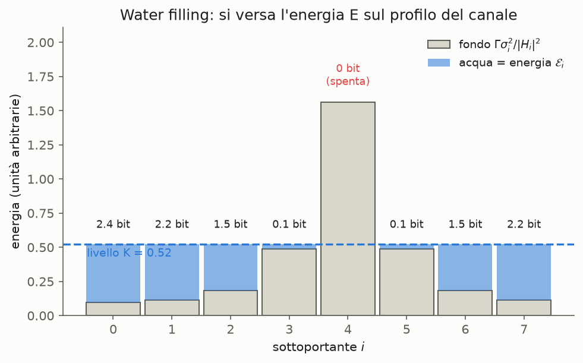

Home · Approfondimenti
Approfondimenti
Materiale non d'esame. Letture facoltative fornite a lezione, utili per capire meglio gli argomenti ma da non confondere con le slide: per l'esame valgono le pagine delle lezioni. I calcoli delle dispense sono svolti passo per passo (🧩 = passaggio ricostruito da me, ⚠️ = probabile refuso della dispensa).
Indice degli approfondimenti
- Modulazione multiportante, OFDM e DMT — note di G. Gelli
- Come si lega alla Lezione 15
- 1. Introduzione: cos'è la modulazione multiportante
- 2. Principio della modulazione multiportante
- 3. Prestazioni in AWGN
- 4. Effetti del canale e tempi di guardia
- 5. Realizzazione mediante FFT
- 6. Bit loading
- Riferimenti e indice delle note
Modulazione multiportante, OFDM e DMT — note di G. Gelli
📚 Approfondimento, non materia d'esame. Dispensa di Giacinto Gelli (maggio 2001, 24 pagine), da leggere dopo la Lezione 15. Per l'esame valgono le slide della prof. Darsena e le pagine ofdm, prefisso ciclico, ofdm con fft, equalizzazione ofdm, limiti dell ofdm. Questa pagina riassume le note e ne espande i calcoli; non viene richiamata nel corso completo.
Come si lega alla Lezione 15
Le note seguono lo stesso percorso delle slide (impulsi ortogonali, spettro, canale e tempo di guardia, realizzazione con DFT, prefisso ciclico) e aggiungono due parti che le slide non hanno: le prestazioni QAM per sottoportante e il bit loading ottimo (water filling). Le notazioni però sono diverse, e conviene saperlo prima di confrontare le formule:
| Grandezza | Note di Gelli | Slide della Lezione 15 |
|---|---|---|
| durata del blocco senza guardia | T (spaziatura 1/T) | T_u (spaziatura 1/T_u) |
| blocco con guardia | T=T_g+T_u, impulsi normalizzati su T (R_T=1/\sqrt T) | T=T_u+T_g, impulsi normalizzati su T_u |
| guadagno sulla sottoportante | \frac{T_u}{T}H(i/T_u) | H(i/T_u) (il fattore T_u/T è nella nota) |
| IDFT / DFT | A_k=\frac1N\sum_ia_ie^{j2\pi ik/N}, DFT senza fattore | entrambe unitarie, 1/\sqrt N |
| rumore in banda base | r_n(\tau)=2N_0\delta(\tau) (passa-banda N_0/2) | E\{w(t)w^\ast(u)\}=N_0\delta(t-u) |
| energia | \mathcal E = energia a radiofrequenza, E=2\mathcal E quella dell'equivalente passabasso | inviluppo con \sqrt2, stesse energie |
| campioni del prefisso | L, canale lungo M campioni | L_{cp}, canale con tap 0,\dots,L_h |
💡 Connessione: la slide dice che "negli appunti a mano della lezione" gli impulsi possono essere normalizzati su T invece che su T_u, e allora r_i[n]=\frac{T_u}{T}H(i/T_u)a_i[n]+w_i[n]: è esattamente la (46)–(48) di queste note.
1. Introduzione: cos'è la modulazione multiportante
- La modulazione multiportante trasporta un flusso di bit con segnali modulati a portanti diverse: è la somma di N segnali indipendenti con la stessa banda e portanti f_i, i=0,\dots,N-1, detti sottoportanti o sottocanali, modulati di solito PSK o QAM.
- A differenza della FDM convenzionale si può assegnare un numero diverso di bit a ogni sottoportante (bit loading) per ottimizzare le prestazioni.
⚠️ Contraddizione (refuso nelle note): si legge che si fa in modo che le sottoportanti che incontrano una minore attenuazione e/o maggior rumore trasportino meno bit. Dalla (112) il numero di bit cresce con \mathcal E_i\lvert H_i\rvert^2/\sigma_i^2: sono le sottoportanti con maggiore attenuazione (o più rumore) a portare meno bit.
- Vantaggi (sezione 1.1): con il bit loading si arriva con relativa semplicità a velocità vicine ai limiti della teoria dell'informazione; abbassando il tasso di simbolo sul canale si riduce molto l'ISI e quindi la complessità degli equalizzatori. Più complessa della portante singola, introdotta più di 40 anni prima nei primi modem (sistema Kineplex), è diventata interessante solo con le realizzazioni numeriche a bassa complessità (FFT).
- Due realizzazioni (sezione 1.2): OFDM per applicazioni punto-multipunto (broadcast), in genere senza allocazione ottima dei bit; DMT (discrete multitone) per applicazioni punto-punto, tipicamente DSL, con bit loading.
- Svantaggi (sezione 1.3): oltre alla complessità, (1) l'elevato rapporto tra potenza di picco e potenza media: l'ampiezza, somma di molti contributi indipendenti, tende ad avere distribuzione gaussiana e quindi un fattore di cresta elevato, che mette alla prova la linearità degli amplificatori; (2) la sensibilità agli errori di sincronizzazione nel tempo e in frequenza (anche per effetto Doppler), che introducono ISI e ICI.
- Applicazioni (sezione 1.4, situazione del 2001): DMT in HDSL e ADSL per l'accesso a larga banda nel local loop, proposto anche per le power line; OFDM nel DAB e nel DVB-T (circa 20 Mbit/s), proposto per i sistemi radiomobili di terza generazione, HIPERLAN/2 e un'evoluzione di IEEE 802.11 fino a 54 Mbit/s; sistemi ibridi OFDM/CDMA (MC-CDMA), in cui più utenti condividono le sottoportanti.
2. Principio della modulazione multiportante
Flusso binario d(n) a R_b=1/T_b, periodo di simbolo multiportante T\gg T_b. Un buffer (S/P) accumula B=R_bT bit nell'intervallo [nT,(n+1)T], formando il blocco \mathbf d(n)=[d_0(n),\dots,d_{B-1}(n)]^T con d_i(n)=d(nB+i). Un codificatore (mapping) trasforma il blocco nel vettore \mathbf a(n)=[a_0(n),\dots,a_{N-1}(n)]^T di N\le B simboli complessi, uno per sottocanale. Figura 1: S/P, codificatore, N rami con impulsi p_i(t-nT), somma x(t), canale con rumore n(t), banco di correlatori con p_i^\ast(t-nT), decisione, decodificatore, P/S.
Con modulazione lineare la frame multicanale e il segnale sono
Correlando con p_i(t-nT) (sistema ideale, senza canale né rumore):
A r_i(n) contribuiscono, oltre a a_i(n), i simboli a_i(m) con m\neq n (ISI) e a_k(m) con k\neq i (ICI, interferenza intercanale); la loro entità dipende dal prodotto scalare tra gli impulsi. Con la condizione di biortogonalità
si annullano ISI e ICI: un sistema multicanale ideale. La (4) implica impulsi a energia unitaria. Nota 1: poiché p_i(t) è un equivalente passabasso, la sua energia è in genere il doppio di quella dell'impulso a radiofrequenza; nelle note \mathcal E_i indica quest'ultima, quindi E_i=2\mathcal E_i.
Derivazione — Impulsi rettangolari biortogonali, (6)–(13)
Si parte da: R_T(t)=1/\sqrt T per t\in[0,T], 0 altrove (6), e p_i(t)=R_T(t)e^{j2\pi f_it} (7).
L'ultima riga si annulla se la spaziatura è un multiplo non nullo di 1/T; il valore minimo è 1/T, che dà la massima efficienza spettrale: p_i(t)=R_T(t)e^{j2\pi\frac iTt} (9). Poiché e^{-j2\pi in}=1, p_i(t-nT)=R_T(t-nT)e^{j2\pi\frac iTt} (10), quindi
Sanity check: è la derivazione con T al posto di T_u.
2.1 Struttura del codificatore
Il blocco di B bit si divide in N sottoblocchi \mathbf d_i(n) di b_i bit, con B=\sum_ib_i (14). Il sottoblocco i assume uno di M_i=2^{b_i} valori, quindi la sottoportante i usa una modulazione a M_i livelli (PSK o QAM). In mancanza di altre informazioni si sceglie b_i=B/N e M_i=2^{B/N}, con potenze uguali: è il caso tipico dell'OFDM, usato nel punto-multipunto, dove non c'è canale di ritorno e non si può ottimizzare per più utenti. Allocare bit e potenze in modo diverso (bit loading) serve quando alcune sottoportanti sono più sfavorite: è usato nei DMT, punto-punto, dove c'è un canale di ritorno (sezione 6).
2.2 Spettro di un sistema multiportante
Con bit i.i.d. in ingresso, i simboli a_i(n) e a_j(n) (i\neq j) sono indipendenti (sottoblocchi diversi dello stesso blocco), e così a_i(n), a_j(m) con n\neq m (blocchi diversi): ogni sequenza è i.i.d. e sequenze diverse sono indipendenti. Con media nulla vale la biortogonalità statistica E[a_i(n)a_j^\ast(m)]=\sigma_{a_i}^2\delta_{i-j}\delta_{n-m} (16).
\text{rep}_T è la replicazione con passo T: r_x(t,\tau) è periodica in t, il segnale è ciclostazionario di periodo T e si media su t. La figura 2 mostra la PSD per N=8 con simboli di valore quadratico medio unitario: spettro complessivo continuo, sottoportanti tratteggiate.
Derivazione — Occupazione di banda (24)
Gli spettri si sovrappongono molto: l'efficienza spettrale è molto maggiore (circa doppia) di una FDM convenzionale. Il prezzo è l'elevata sensibilità agli errori di sincronizzazione, nel tempo e in frequenza, che distruggono l'ortogonalità.
3. Prestazioni in AWGN
Rumore AWGN con PSD N_0/2; il suo equivalente passabasso n(t) è SSL a media nulla con r_n(\tau)=E[n(t)n^\ast(t-\tau)]=2N_0\delta(\tau) (26) e autocorrelazione coniugata nulla (simmetria circolare). Il correlatore dà r_i(n)=a_i(n)+n_i(n) (27), con n_i(n)=\int n(t)R_T(t-nT)e^{-j2\pi\frac iTt}dt (28).
Derivazione — Correlazione del rumore (29)
Rumori gaussiani, incorrelati e quindi indipendenti, con varianza \sigma^2=2N_0. Decisione \hat a_i(n)=\mathcal D_i[a_i(n)+n_i(n)] (30); nota 2: con ISI e ICI la decisione ottima userebbe congiuntamente più simboli e più canali, ma nelle condizioni ideali i canali sono indipendenti e si decide simbolo per simbolo. Con QAM su ogni sottoportante il sistema ideale equivale a N canali QAM a portante singola indipendenti.
💡 Connessione: con la convenzione delle slide il rumore ha varianza N_0; qui 2N_0 perché la PSD passa-banda è N_0/2 e l'equivalente passabasso definito senza \sqrt2 la moltiplica per 4. I rapporti segnale/rumore finali coincidono, perché anche l'energia dei simboli è raddoppiata (E=2\mathcal E).
3.1 QAM a portante singola
Modello r(n)=Ha(n)+n(n) (31), figura 3, con guadagno complesso H del canale e rumore bianco di potenza \sigma^2=2N_0. Costellazione QAM quadrata con M=2^b punti (b pari), distanza d tra simboli adiacenti (figura 4: 64-QAM), simboli equiprobabili.
Derivazione — Potenza della costellazione (32)
Sanity check: 4-QAM (M=4): punti (\pm\frac d2,\pm\frac d2), \lvert a\rvert^2=\frac{d^2}{2}=\frac{3}{6}d^2 ✓. Vale esattamente per M potenza di 4 (4, 16, 64, 256, 1024-QAM); per b dispari è solo un'approssimazione.
Derivazione — Probabilità d'errore QAM (34)–(39)
Si parte da: QAM = due ASK in quadratura, ciascuna con \sqrt M livelli e metà dell'energia; i due flussi si separano perfettamente.
Il fattore 2(1-1/\sqrt M) conta che i livelli interni hanno due vicini e quelli esterni uno solo. La (36) è comunque un limite superiore per QAM con b qualsiasi. Nota 3: le note di Proakis usano \text{erfc}, con Q(x)=\frac12\text{erfc}(x/\sqrt2).
Sanity check: M=4: P_{QAM}\simeq2Q\big(\sqrt{\lvert H\rvert^2\mathcal E/N_0}\big), cioè ogni asse è una BPSK con energia \mathcal E/2 per bit, come la QPSK della Lezione 10.
3.2 QAM multiportante
Senza effetti del canale (H=1) e con rumore bianco, ha senso usare la stessa QAM (M=2^b) e la stessa energia \mathcal E/N su ogni sottoportante, come nell'OFDM: tutte hanno la stessa probabilità d'errore, quella del sistema,
Con il canale, le probabilità sulle sottoportanti differiscono: il sistema ha una probabilità media o è dominato dalla peggiore, e non ha più senso usare modulatori uguali (sezione 6).
4. Effetti del canale e tempi di guardia
Ridurre il tasso di simbolo per sottoportante mitiga l'ISI, ma ne resta un residuo, e c'è l'ICI. Si divide allora T in un tempo di guardia T_g e un tempo utile T_u (T=T_g+T_u) e la spaziatura diventa 1/T_u invece di 1/T. Tre conseguenze: (1) gli impulsi sono biortogonali su T_u, non più su T; (2) la banda aumenta perché aumenta la spaziatura; (3) l'energia per la rivelazione si riduce, perché una frazione T_g/T si spende nella guardia.
Segnale trasmesso x(t)=\sum_n\big[\sum_ia_i(n)e^{j2\pi\frac{i}{T_u}t}\big]R_T(t-nT) (42), canale LTI causale r(t)=x(t)\ast h(t)+n(t) (43) con risposta di durata T_h\le T: ISI solo dalla frame precedente. Il ricevitore integra su [nT+T_g,(n+1)T], di ampiezza T_u, dove arrivano solo la frame n e la n-1 (44).
Derivazione — Uscita del correlatore con tempo di guardia (45)–(48)
Il sistema equivale a N canali AWGN indipendenti con fattori di scala diversi, i campioni di H(f) a passo 1/T_u. Con H_i=H(i/T_u) e \gamma=T_g/T (in pratica tipicamente 0.25): r_i(n)=(1-\gamma)H_ia_i(n)+n_i(n) (49).
Derivazione — Energia, rumore e probabilità d'errore con la guardia (50)–(55)
⚠️ Contraddizione (nelle note): la (52) dice che il contrasto di energia si modifica del fattore \lvert H_i\rvert^2(1-\gamma), ma la (53) e la (54) riportano sotto radice solo \mathcal E_i(1-\gamma)/N_0, senza \lvert H_i\rvert^2. Coerentemente con la (36) e con la (52) l'argomento dovrebbe essere \frac{3}{M_i-1}\frac{\lvert H_i\rvert^2\mathcal E_i(1-\gamma)}{N_0} (a meno che \mathcal E_i indichi già l'energia ricevuta, cosa che il testo non dice).
Nota 4: si potrebbe non trasmettere affatto durante la guardia, ma la trasmissione discontinua darebbe seri problemi di compatibilità elettromagnetica. Con BER diverse sulle portanti, la BER complessiva è dominata dalle peggiori: in un sistema ottimizzato la BER è la stessa su tutte, e per BER e potenza fissate si assegnano i bit per massimizzare la velocità (sezione 6).
5. Realizzazione mediante FFT
Proposta già negli anni '50 (Kineplex), la tecnica non si è diffusa per la difficoltà di realizzarla in analogico: era impossibile costruire oscillatori abbastanza stabili da garantire l'ortogonalità. Il problema è stato superato dalle tecnologie numeriche e dalla FFT.
Derivazione — Spettro della frame e campionamento (56)–(59)
Si parte da: la frame f_n(t)=\sum_ia_i(n)e^{j2\pi\frac iTt}R_T(t-nT) (56), con i simboli trattati come deterministici.
⚠️ Contraddizione (refuso probabile nella (57)): le note scrivono la fase come e^{-j\pi(fT-i)(n-0.5)}; dal calcolo sopra viene e^{-j\pi(fT-i)(2n+1)}=e^{-j2\pi(fT-i)(n+0.5)}. Il modulo, l'unica cosa che serve per la banda, è lo stesso.
La banda non è limitata (sinc), ma in pratica è circa 2W=N/T per N\gg1: per il teorema del campionamento basta il passo T_c=1/(2W)=T/N, e in [nT,(n+1)T] ci sono esattamente N campioni:
Si genera quindi il segnale con la IDFT, una conversione P/S e un D/A a passo T_c=T/N (figura 5): con h_{D/A}(t) risposta del convertitore (idealmente una sinc, serie di Shannon) x(t)=\frac{N}{\sqrt T}\sum_n\sum_kA_k(n)h_{D/A}(t-nT-kT_c) (60). Con A_k(n)=A(nN+k) (61), la decomposizione polifase di A(n), diventa x(t)=\frac N{\sqrt T}\sum_nA(n)h_{D/A}(t-nT_c) (62).
Derivazione — Ricezione ideale con convertitori sinc (63)–(73)
ISI e ICI si eliminano del tutto: basta una DFT per riavere i simboli.
Derivazione — Varianza del rumore dopo la DFT (74)–(86)
È la stessa varianza del ricevitore a tempo continuo (29): con convertitori ideali la realizzazione con DFT non peggiora le prestazioni rispetto al banco di oscillatori analogici. s_i(n)=a_i(n)+w_i(n) (78), con w_i(n) gaussiano a media nulla.
5.2 Prefisso ciclico
Con la DFT il tempo di guardia si realizza con il prefisso ciclico: al prodotto delle DFT corrisponde la convoluzione circolare, mentre il canale fa una convoluzione lineare; premettendo agli N campioni della IDFT la copia degli ultimi L\le N, il canale "vede" periodica la sequenza e la convoluzione lineare coincide con quella circolare. Con P=N+L:
Scartando i primi L valori (p=0,\dots,N-1, cioè rimozione del prefisso) la seconda somma è vuota purché L\ge M, perché h_{tot}(m)=0 per m\ge M (101): è la condizione T_g\ge T_h del tempo di guardia. 🧩 Per p=0 la somma va da m=L+1 a M-1 ed è vuota già con L\ge M-1: è la condizione L_{cp}\ge L_h delle slide, con L_h=M-1 ultimo tap; le note usano la condizione appena più forte L\ge M.
Si riottengono i simboli a meno di un fattore complesso, che si compensa con un equalizzatore a una sola presa. In AWGN il contrasto di energia per sottoportante si modifica del fattore \lvert H_{tot}(i)\rvert^2(1-\gamma) con \gamma=L/P, la frazione di campioni spesi per il prefisso.
6. Bit loading
Se il canale non è ideale o il rumore cambia da sottoportante a sottoportante (rumore non bianco: nei DSL domina la diafonia NEXT/FEXT, nota 5), conviene allocare un numero diverso di bit alle sottoportanti: bit loading o precodifica. Si usa nel punto-punto, dove un canale di ritorno permette al ricevitore di comunicare al trasmettitore una stima dell'SNR per sottoportante (per esempio nei modem ADSL in downstream). Con guardia o CP il sistema è ricondotto a N canali AWGN indipendenti (figura 6), con guadagno H_i e rumore di potenza \sigma_i^2.
Derivazione — Bit per sottoportante a probabilità d'errore fissata (108)–(113)
Si parte da: la (38) con M_i\gg1, cioè 1-1/\sqrt{M_i}\simeq1.
La (108) è esatta per b_i pari (QAM quadrata) con M_i\gg1, e un limite superiore per b_i qualsiasi.
Derivazione — SNR gap e confronto con la capacità (114)–(116)
La capacità di N canali AWGN indipendenti in parallelo è C=\frac1T\sum_i\log_2\big(1+\frac{\mathcal E_i\lvert H_i\rvert^2}{\sigma_i^2}\big) (114). Ponendo
il bit rate ha la forma della capacità con il contrasto di energia diviso per \Gamma: per arrivare alla capacità ideale bisognerebbe aumentare il contrasto di un fattore \Gamma, lo SNR gap. Più \Gamma è piccolo, più il sistema è vicino all'ideale.
Numeri (🧩, con le definizioni delle note): P=10^{-6}: Q^{-1}(2.5\cdot10^{-7})\approx5.03, \Gamma\approx25.3/6\approx4.2, cioè 6.2 dB; P=10^{-3}: Q^{-1}(2.5\cdot10^{-4})\approx3.48, \Gamma\approx2.0 (3.1 dB). Il gap cresce lentamente con l'affidabilità richiesta.
💡 Connessione: è la capacità \log_2(1+\text{SNR}) della Lezione 12 (informazione mutua e capacita, limite di shannon) applicata a N canali in parallelo; la QAM non codificata ne resta lontana di \Gamma, e la codifica di canale serve a ridurre questo gap.
Derivazione — Distribuzione ottima dell'energia: water filling (117)–(121)
Problema: massimizzare R_b (116) con energia totale assegnata \mathcal E=\sum_i\mathcal E_i (117). Pongo n_i=\Gamma\sigma_i^2/\lvert H_i\rvert^2 (il "fondo" della sottoportante i).
Alla distribuzione uniforme \mathcal E/N si aggiunge un termine che misura quanto la sottoportante i si scosta dalla media delle condizioni di tutte. Il nome water filling (o water pouring) viene dall'analogia idraulica della figura 7: il profilo del canale \sigma_i^2\Gamma/\lvert H_i\rvert^2 è il fondo di un recipiente, si versa l'energia totale come acqua, il pelo libero si porta al livello K e la profondità dell'acqua sopra la sottoportante i è \mathcal E_i. 🧩 La (120) vale se tutte le sottoportanti sono attive; se qualcuna risulta con \mathcal E_i<0 va spenta e K si ricalcola con le sole attive.

🧩 Water filling su N=8 sottoportanti di un canale a due prese h=[1,\,0.6], con \Gamma\sigma^2=0.25 ed energia totale 2 (script output/grafici/genera_grafici_approfondimenti.py). Le sottoportanti con il fondo basso (canale buono) ricevono più energia e portano più bit; la 4, sul minimo di \lvert H_i\rvert^2, ha il fondo sopra il livello K\approx0.52 e viene spenta. I bit b_i=\log_2(1+\mathcal E_i/n_i) non sono interi: vanno arrotondati, come dicono le note.
Algoritmo di bit loading ideale:
- per una probabilità d'errore P fissata si calcola lo SNR gap \Gamma con la (115);
- per un'energia \mathcal E fissata si calcola K con la (120) e le \mathcal E_i con la (119);
- se \mathcal E_i=0 per ogni i, la probabilità P non si può garantire con l'energia \mathcal E: si aumenta l'energia o si rilassa P e si ripetono i passi 1 e 2;
- si calcolano i b_i, e quindi le costellazioni, con la (112).
Nulla garantisce che i b_i siano interi: si arrotonda e si aggiustano le energie per rispettare vincolo e P obiettivo; in alternativa esistono algoritmi di ottimizzazione discreta che risolvono direttamente il problema vincolato. La formulazione non è l'unica: a bit rate ed energia fissati si può minimizzare la probabilità d'errore, oppure a bit rate e probabilità fissati minimizzare l'energia.
Riferimenti e indice delle note
Le note citano dieci riferimenti: tra gli altri il lavoro sul Kineplex (Doelz, Heald e Martin, 1957), gli algoritmi di loading di Chow-Cioffi-Bingham e di Fischer-Huber, il "multicarrier primer" di Cioffi, l'articolo di Bingham del 1990 ("an idea whose time has come"), Proakis per le probabilità d'errore QAM e Gallager per la capacità. Pagina 24: indice delle sezioni (1 Introduzione, 2 Principio, 3 Prestazioni, 4 Canale e tempi di guardia, 5 FFT, 6 Bit loading).